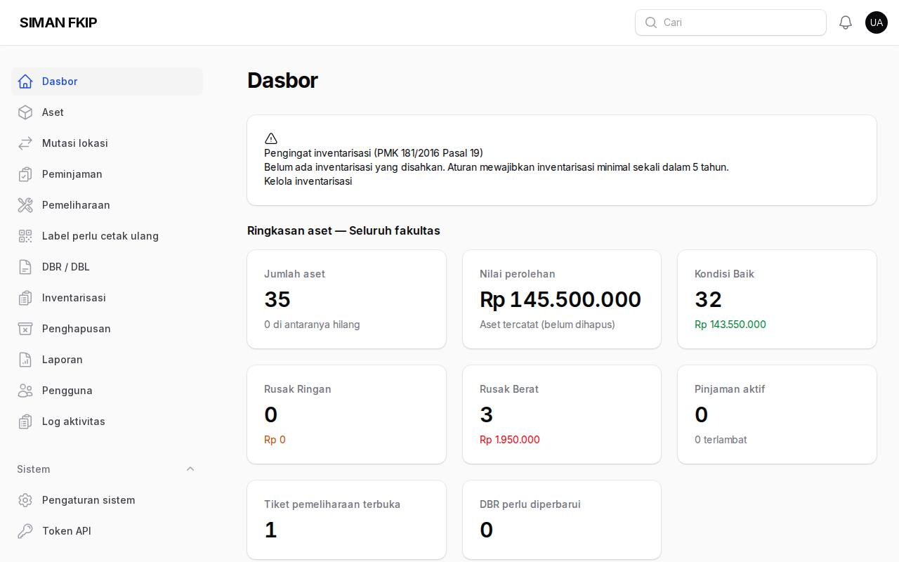
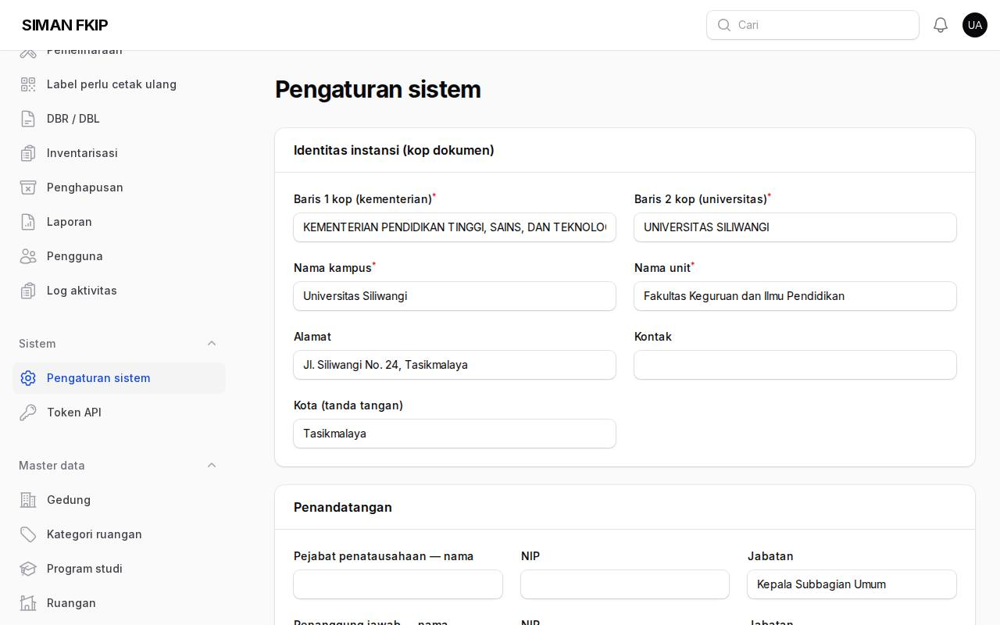
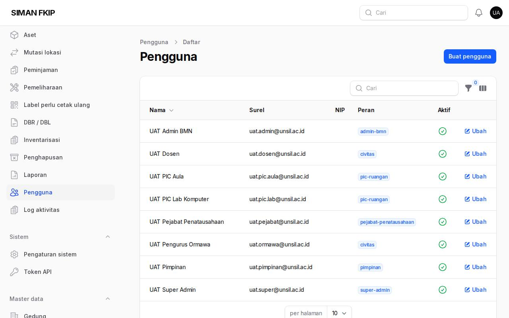
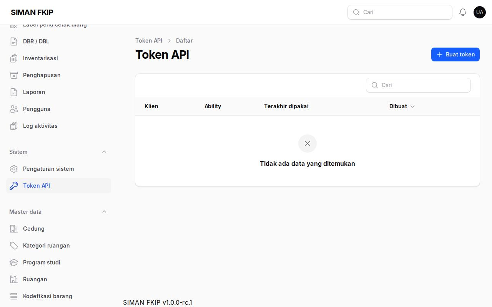
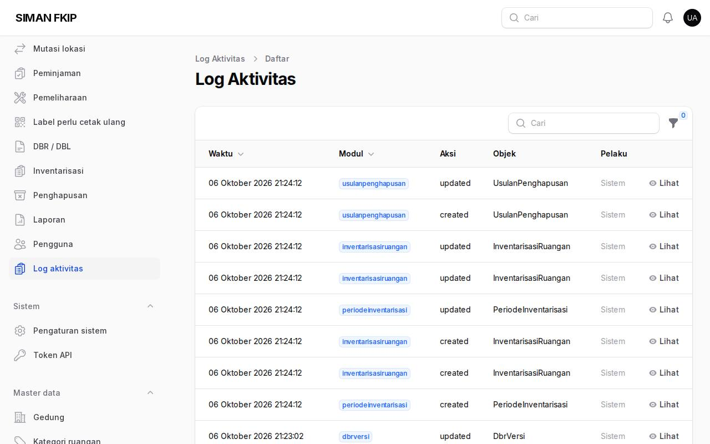

1. Dasbor
Super-admin memiliki seluruh hak, termasuk pengaturan sistem. Akun super-admin wajib MFA.

2. Pengaturan sistem
Pengaturan sistem: identitas instansi dan penandatangan (kop dokumen), toggle fitur (tambah aset, ubah kondisi, mutasi, peminjaman, tahan mutasi saat inventarisasi), ambang pengingat inventarisasi, retensi peminjaman (bulan), dan maksimum hari pinjam.

3. Pengguna dan peran
Pengguna: buat/ubah akun, aktifkan atau nonaktifkan (akun tidak dihapus), dan beri peran: super-admin, admin-bmn, pejabat-penatausahaan, pic-ruangan, pimpinan, civitas.

4. Token API untuk Surat
Token API → Buat token: isi nama klien dan ability (ruangan:baca, ruangan:pakai). Teks token tampil sekali — salin dan serahkan ke pengelola Surat. Cabut token dengan menghapusnya. Dokumentasi endpoint: docs/API.md.

5. Log aktivitas dan antrean
Log aktivitas memuat siapa melakukan apa dan kapan (data rahasia disamarkan). Antrean dan tugas latar dipantau di /horizon (khusus super-admin).
